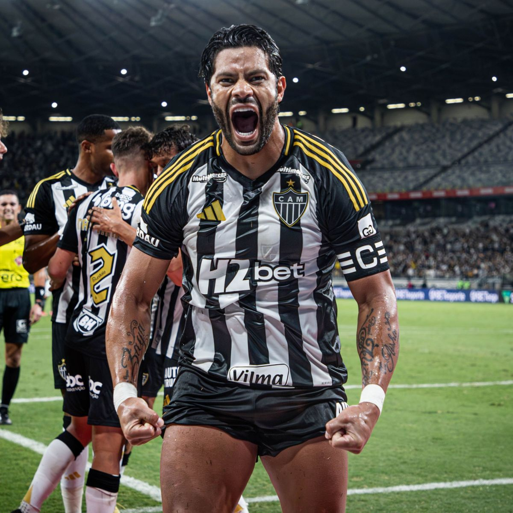

Main Players

Hulk

Diego Tardelli

Reinaldo

Ronaldinho

Clube Atlético Mineiro was founded in 1908 in Belo Horizonte, Brazil.
The club colors are black and white, representing strength and tradition.
The team is known as "Galo", symbolizing courage and fighting spirit.
Copa Libertadores - 2013
Brazilian Championship - 1971, 2021
Brazilian Cup - 2014, 2021
Supercopa do Brasil - 2022

I chose Atlético Mineiro because it represents passion and strength.
Since its foundation, the club has always fought with determination.
For me, it is more than a team — it is identity and pride.